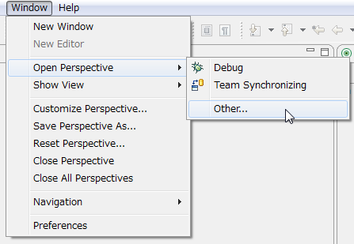
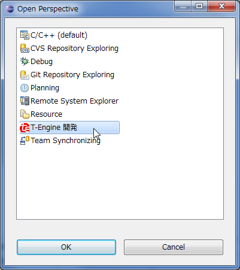

In order to use Eclipse for development you must first create the "Workspace" work environment.
(1) Double-click the Eclipse shortcut on the Desktop or the "eclipse.exe" file inside the "C:\eclipse" folder to launch Eclipse.
(2) After a few moments the "Select a workspace" dialog is displayed. Use Cygwin to specify the Windows path of the directory where the T-Kernel source code package was extracted and press the "OK" button.
Select a workspace C:\cygwin\usr\local\tef_em1d\tkernel_source(3) Eclipse generates a new workspace for T-Kernel development and displays the "Welcome" screen.
(4) Next, click the "Workbench" icon on the right side of the "Welcome" screen to display the "Workbench".
(5) From the menus, select "Window" -> "Open Perspective" -> "Other" -> "T-Engine Development".
 
(6) "T-Engine Development" is shown in the perspective display in the upper right section of the window.
Next, enter the workspace environment settings.
(1) Select the "Window" -> "Preferences" menu to display the "Preferences" dialog.
(2) Click "T-Engine Development Environment" in the left pane of the dialog and check the following settings.
T-Engine Development Environment
Cygwin directory C:\CygwinSpecify the Cygwin installation path. Change the path if Cygwin was installed in a non-standard location.
External tools: te_vcom
Location ${te_plugin_loc:COMMON}\te\tool\Cygwin-i686\etc\te_vcom.exe
Parameters -115200 -x -l /dev/ttyS0Use the defaults as no changes are needed.
External tools: gterm
Location ${te_plugin_loc:COMMON}\te\tool\Cygwin-i686\etc\gterm.exe
Parameters -i -s -e -lte_vcomUse the defaults as no changes are needed.
Settings for external tools are stored in the registry and commonly applied to the same user, so they are saved even if the development environment is reinstalled.
Click the [+] mark to the left of "T-Engine Development Environment" in the left pane of the Preferences dialog, click the "tef_em1d.1.1.2" shown underneath, and check the following environment variables.
Environment Variables
| Variable name | Value |
|---|---|
| BD | \usr\local\tef_em1d\tkernel_source |
| GNU_BD | \local\tef_em1d\tool\Cygwin-i686 |
| GNUARM_2 | \usr\local\tef_em1d\tool\Cygwin-i686\arm_2-unknown-tkernel |
If the GNU development environment was installed in a non-standard location, change the "\usr\local\tef_em1d" portion to the installed path name.
Use the defaults for other environment variables as no changes are needed.
Eclipse manages each program as a "Project", so a project must be created to perform tasks such as system builds (compile/link), debugging, file operations.
(1) Move the mouse over the "C/C++ Projects" view shown in the left pane of the Eclipse window and right-click the mouse to select "New" -> "T-Engine C/C++ Project" from the displayed menu.
(2) When the "New Project" dialog is displayed, create the following project. Do not set anything for the template or output directory but leave them in the default setting.
Project name kernel
Location C:\cygwin\usr\local\tef_em1d\tkernel_source\kernel
Target tef_em1d.1.1.2
Program type KernelThe project location of a "T-Engine C/C++ Project" is automatically set to the project name sub-directory within the workspace.
The T-Kernel system can only be built in the "kernel" project shown above, and only files in the kernel sub-directory may be viewed or edited. Create projects to support other sub-directories as needed.
Example: Project name include
Location C:\cygwin\usr\local\tef_em1d\tkernel_source\include
Target tef_em1d.1.1.2
Program type Library (anything can be specified)(3) The created project is displayed in the "C/C++ Projects" view shown in the left pane of the Eclipse window.
Next, set up the build environment for the project directory which will actually run the make command.
The build environment is information which indicates the Eclipse T-Kernel model-specific plugin name and version. The current tef_em1d version is already set to "tef_em1d.1.1.2".
The directory which contains the Makefile and runs make is called the build directory. It contains the build result object.
(1) Click the [+] mark to the left of the directory shown in the "C/C++ Projects" view in the left pane of the Eclipse window and follow the directory structure below to display the build directory.
(2) Move the mouse over the displayed build directory and right-click the mouse to select "Properties" from the bottom of the menu to display the "Properties" dialog.
(3) Click "T-Engine Related" in the left pane of the dialog and enter the following settings.
Path /kernel/sysmain/build/tef_em1d
Build environment tef_em1d.1.1.2
Program type kernelThe build directory is displayed in the path. You can have as many build directories as you want, but the build environment settings are needed to run make.
Example: Path /kernel/sysmain/build/tef_em1d.debug
Build environment tef_em1d.1.1.2
Program type kernelThe following Eclipse setting files and folders are created in the workspace folders and project folders when an Eclipse work environment is set up.
(1) Workspace folder
"C:\cygwin\usr\local\tef_em1d\tkernel_source"
Folder ".metadata"(2) Project folder
"C:\cygwin\usr\local\tef_em1d\tkernel_source\kernel" etc.
Folder ".settings"
File ".cproject"
File ".project"Be careful not to change or delete these setting files and folders.